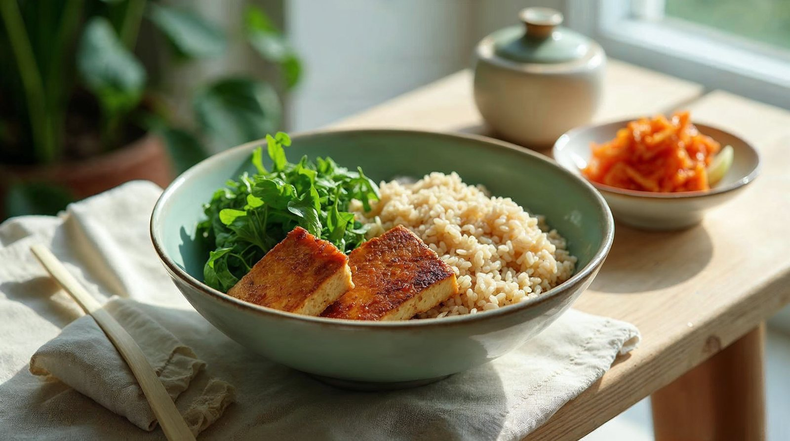
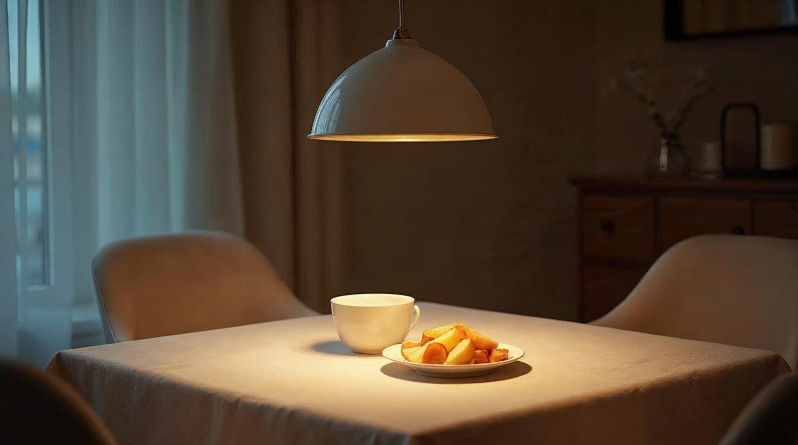
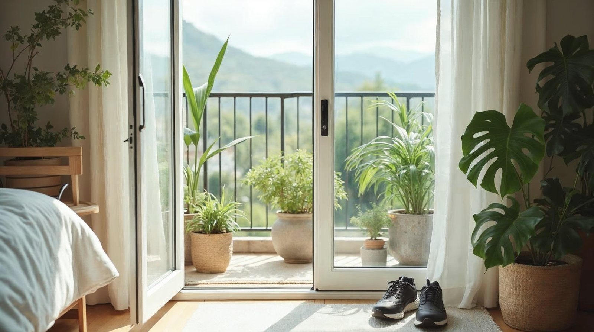
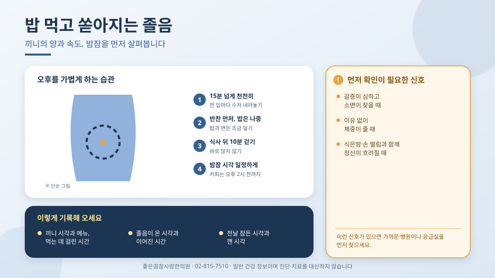

이종호 한의사 감수좋은꿈참사랑한의원 대표원장 (한의사 면허번호 19769)발행 2026-11-26 · 수정 2026-11-27
이 글의 차례
점심을 먹고 사무실 자리에 돌아와 모니터를 켭니다. 오후 업무를 시작하려는데 글자가 눈에 들어오지 않고, 눈꺼풀이 천천히 내려앉아요. 커피를 한 잔 더 마셔 봐도 고개가 꾸벅 떨어지는 순간이 찾아오죠. 진료실에서 이 장면을 얘기하시는 분이 정말 많아요.
먼저 말씀드릴게요. 식사 뒤에 조금 나른해지는 건 원래 그래요. 배가 부르면 몸이 소화에 힘을 쓰느라 쉬고 싶어지는 게 자연스러운 흐름이거든요. 졸음이 온다고 해서 스스로를 게으르다고 여기실 필요는 없어요.
다만 '식후에 잠깐 나른한 것'과 '오후가 통째로 흐릿해지는 것'은 다른 얘기예요. 매일 오후를 졸음에 빼앗길 정도라면, 체질이려니 넘기기보다 끼니와 잠의 모양을 한번 들여다볼 만해요.
저는 식곤증으로 오시는 분께 무엇을 드셨는지만큼, 어떻게 드셨는지를 꼭 여쭤요. 몇 분 만에 드셨는지, 밥과 면이 얼마나 되었는지, 드시고 나서 바로 앉으셨는지요. 같은 메뉴라도 먹는 방식에 따라 오후의 졸음이 꽤 달라지거든요.
이 글에서는 식곤증이 왜 생기는지, 다른 졸음과는 어떻게 다른지, 일상에서 무엇부터 바꿔 볼 수 있는지를 차근차근 말씀드릴게요.
식곤증은 어떤 상태를 말하나요
식곤증은 식사 뒤 한두 시간 안에 졸음과 나른함, 머리가 멍한 느낌이 몰려오는 것을 말합니다. 특히 점심 뒤 오후 1시에서 3시 사이에 많이 느끼시는데, 이 시간대는 원래 몸의 하루 리듬에서도 각성이 조금 떨어지는 때라 두 가지가 겹치기 쉽습니다.
가벼운 식곤증은 잠깐 눈을 붙이거나 몸을 움직이면 금세 지나갑니다. 반면 졸음이 너무 심해 회의 중에도 견디기 어렵거나, 운전을 할 때 위험하다고 느낄 정도라면 생활을 조정해 볼 필요가 있습니다. 매일 같은 시간에 되풀이된다는 점이 식곤증의 특징입니다.
왜 밥을 먹으면 졸음이 몰려올까요
식사를 하면 몸은 소화에 힘을 모읍니다. 위와 장이 바쁘게 움직이는 동안 몸 전체는 쉬는 쪽으로 기울고, 긴장을 담당하는 신경은 한발 물러섭니다. 그래서 배가 부르면 자연스럽게 노곤해집니다. 여기까지는 몸이 제 일을 하고 있다는 뜻입니다.
졸음을 더 키우는 것은 대개 끼니의 모양입니다. 밥, 면, 떡, 빵처럼 탄수화물이 한 끼에 많이 몰리고 빨리 먹으면 혈당이 짧은 시간에 크게 올랐다가 내려옵니다. 이 오르내림의 폭이 클수록 식사 뒤 나른함과 멍한 느낌이 짙어지는 분이 많습니다.
밤잠이 부족한 것도 큰 몫을 합니다. 전날 늦게 잤거나 자다가 여러 번 깼다면, 점심 뒤 원래 찾아오는 각성의 골짜기가 훨씬 깊어집니다. 이럴 때는 식사가 졸음의 방아쇠 역할을 할 뿐, 진짜 원인은 쌓인 잠 빚인 경우가 많습니다.
한의학에서는 식사 뒤 몸이 유난히 무겁고 늘어지는 모습을 소화하는 힘이 지쳐 있는 상태로 보기도 합니다. 평소 입맛이 들쭉날쭉하고 배가 자주 더부룩하며 손발이 무겁다면, 소화 기운과 몸의 순환을 함께 살펴봅니다.
반대로 기름진 음식을 즐기고 몸이 쉽게 붓는 분은 몸에 습한 기운이 쌓여 식사 뒤 머리가 무겁고 개운하지 않은 모습으로 나타나기도 합니다. 같은 식곤증이라도 사람마다 바탕이 다르기 때문에, 진료실에서는 졸음 하나만 보지 않고 소화와 잠, 몸의 무게감을 함께 묻습니다.
식곤증과 헷갈리기 쉬운 졸음
식사와 상관없이 하루 종일 졸리고 밤에 충분히 자도 개운하지 않다면, 식곤증보다는 잠의 질이나 다른 몸 상태를 먼저 살펴야 합니다. 코골이가 심하고 자다가 숨이 멎는 것 같다는 말을 들으셨다면 수면 중 호흡 문제를 확인해 보는 것이 좋습니다.
물을 많이 마시는데도 갈증이 이어지고 소변이 잦으며 쉽게 지친다면 혈당을 먼저 확인해 보셔야 합니다. 늘 피곤하고 추위를 많이 타며 몸이 붓는 느낌이 있다면 갑상선 기능이나 빈혈을 함께 볼 수 있습니다. 이런 경우에는 내과 검사가 출발점이 됩니다.
봄철에만 유독 나른하다면 계절이 바뀌며 몸이 적응하는 과정의 춘곤증일 수 있습니다. 식곤증은 계절과 상관없이 식사 뒤라는 시점이 분명하다는 점에서 조금 다릅니다. 어느 쪽이든 졸음이 오는 시각을 적어 보시면 구분에 큰 도움이 됩니다.
식곤증이 심해지기 쉬운 생활
다음과 같은 생활이 겹칠수록 오후 졸음이 깊어지는 경향이 있습니다. 해당하는 것이 몇 개인지 한번 세어 보세요.
- 아침을 거르고 점심에 몰아서 많이 드시는 경우
- 덮밥, 국수, 짜장면처럼 한 그릇 음식을 10분 안에 드시는 경우
- 식사 뒤 달달한 음료나 디저트를 곁들이는 경우
- 밥을 먹고 바로 자리에 앉아 오후 내내 움직임이 적은 경우
- 밤 12시를 넘겨 잠들거나 주말과 평일의 잠 시각이 크게 다른 경우
- 점심에 술을 곁들이거나 전날 술자리가 잦은 경우
이 가운데 가장 손쉽게 바꿀 수 있는 것은 먹는 속도와 식사 뒤의 움직임입니다. 메뉴를 바꾸지 않아도 이 두 가지만으로 오후가 한결 가벼워지는 분이 적지 않습니다.

점심 메뉴는 어떻게 고르면 덜 졸릴까요
회사 근처 식당에서 고를 수 있는 메뉴는 한정되어 있어서, 매번 건강한 식단을 챙기기는 어렵습니다. 그래서 저는 메뉴를 완벽하게 바꾸기보다 같은 메뉴 안에서 조금씩 조정하는 방법을 권합니다.
국밥을 드신다면 밥을 처음부터 다 말지 말고 반 공기만 넣어 보세요. 덮밥이나 비빔밥이라면 밥을 조금 덜어 달라고 부탁하고 반찬을 넉넉히 드시면 됩니다. 국수나 라면처럼 면만 있는 메뉴는 삶은 달걀이나 두부, 나물 반찬을 곁들이는 것이 좋습니다.
백반이나 정식처럼 반찬이 여러 가지 나오는 메뉴는 식곤증 쪽에서는 비교적 편한 선택입니다. 반찬을 먼저 집어 먹다 보면 자연스럽게 식사 속도가 느려지고 밥의 양도 줄어들기 때문입니다.
식곤증이 일과 운전에 미치는 영향
식곤증이 가볍다면 웃고 넘길 일이지만, 오후 회의마다 고개가 떨어지거나 중요한 문서를 읽다 같은 줄을 몇 번씩 다시 읽게 된다면 일의 질에도 영향을 줍니다. 오후 업무가 늘 밀리다 보니 저녁까지 일이 이어지고, 그만큼 잠이 늦어지는 고리가 생기기도 합니다.
특히 점심 뒤 운전을 해야 하는 분이라면 졸음을 가볍게 보지 마셔야 합니다. 운전 중 졸음이 몰려오면 참고 버티기보다 안전한 곳에 차를 세우고 잠시 눈을 붙이거나 바람을 쐬는 것이 먼저입니다. 이런 일이 자주 반복된다면 식사와 잠을 함께 점검할 때입니다.

저녁 식사 뒤에 쏟아지는 졸음은요
점심보다 저녁을 먹고 나서 소파에 쓰러지듯 잠드는 분도 많습니다. 저녁에 하루 중 가장 많은 양을 드시고, 술을 곁들이거나 바로 누워 TV를 보시는 경우가 흔합니다. 그렇게 초저녁에 깜빡 잠들면 정작 밤에는 잠이 달아나 다음 날 다시 피곤해집니다.
저녁은 잠들기 3시간 전쯤 마치고, 식사 뒤에는 설거지나 가벼운 산책처럼 몸을 조금 움직이는 일을 이어 가 보세요. 초저녁 졸음을 넘기면 밤잠이 깊어지고, 다음 날 점심 뒤 졸음도 함께 가벼워지는 경우가 많습니다.
학생과 어르신의 식곤증은 조금 다르게 봅니다
학생들은 급식이나 학원 사이 짧은 시간에 허겁지겁 먹고 바로 책상에 앉는 경우가 많습니다. 여기에 늦은 밤까지 공부하느라 잠이 부족하면 오후 수업 시간이 통째로 흐려집니다. 학생이라면 먹는 속도와 밤잠 시각을 먼저 살펴봅니다.
어르신은 식사량이 많지 않은데도 식사 뒤 꾸벅꾸벅 조는 일이 잦아지실 수 있습니다. 밤잠이 얕아지고 낮 활동이 줄어든 영향이 크지만, 드시는 약이나 혈당, 혈압의 흐름도 함께 보아야 합니다. 평소와 달리 졸음이 갑자기 늘었다면 다니시는 내과나 신경과에 먼저 말씀하시길 권합니다.
먼저 이렇게 여쭙니다
처음 오시면 저는 대략 이런 순서로 여쭙니다. 미리 떠올려 오시면 이야기가 수월해집니다.
- 졸음은 어느 끼니 뒤에 가장 심하고, 얼마나 이어지나요?
- 한 끼에 걸리는 시간은 대략 몇 분인가요?
- 아침은 드시나요? 점심과 저녁의 양은 어떤가요?
- 밤에 몇 시에 잠들고 몇 시에 깨시나요? 중간에 깨시나요?
- 식사 뒤 더부룩함, 트림, 속쓰림이 함께 있나요?
- 건강검진에서 혈당이나 빈혈, 갑상선 이야기를 들은 적이 있나요?
정확한 숫자가 아니어도 괜찮습니다. 대략의 흐름만 말씀해 주셔도 졸음이 식사 쪽에서 오는지, 잠 쪽에서 오는지를 가늠하는 데 충분히 도움이 됩니다.

일상에서 먼저 해 볼 수 있는 것
식곤증을 줄이는 방법은 생각보다 소박합니다. 한꺼번에 다 하려 하지 마시고, 이번 주에 하나만 골라 보세요.
- 한 끼를 15~20분에 걸쳐 천천히 꼭꼭 씹어 드시기
- 밥이나 면은 평소의 3분의 2로 줄이고 채소와 단백질 반찬을 먼저 드시기
- 식사 뒤 바로 앉지 말고 10분 정도 가볍게 걷기
- 식후 달달한 음료 대신 물이나 따뜻한 차 마시기
- 아침을 간단히라도 드셔서 점심에 몰아 먹지 않기
- 졸음이 몰려오면 창문을 열거나 자리에서 일어나 몸을 펴 보기
먹는 순서를 바꾸는 것은 의외로 효과를 느끼시는 분이 많습니다. 채소나 나물, 두부나 달걀 같은 반찬을 먼저 몇 입 드시고 밥을 나중에 드시면 혈당이 오르는 속도가 조금 완만해질 수 있습니다.
낮잠이 꼭 필요하다면 15~20분 정도로 짧게 주무시는 것이 좋습니다. 30분을 넘기면 깊은 잠에 빠져 깨고 나서 더 멍해지거나 밤잠에 영향을 줄 수 있습니다. 앉은 채로 눈을 감고 쉬는 것만으로도 머리가 맑아지는 분이 많습니다.
카페인은 졸음을 잠시 밀어낼 수 있지만, 오후 늦게 마시면 밤잠을 방해해 다음 날 식곤증이 더 깊어지는 고리가 생깁니다. 커피는 오후 2~3시 이전으로 정해 두시길 권합니다.
한의원에서 함께 살필 수 있는 경우
- 식사 뒤 졸음과 함께 배가 자주 더부룩하고 소화가 더딘 경우
- 입맛이 들쭉날쭉하고 손발이 무거우며 쉽게 지치는 경우
- 밤잠이 얕아 낮에 졸음이 겹치는 경우
- 몸이 잘 붓고 식사 뒤 늘어지는 느낌이 큰 경우
- 생활을 바꿔 보았는데도 오후마다 견디기 어려운 경우
좋은꿈참사랑한의원에 오시면 먼저 아래 '먼저 확인이 필요한' 신호가 없는지부터 봅니다. 그다음 맥을 짚고 배를 살피며, 소화와 잠, 대소변, 손발의 온도를 함께 여쭙니다.
진찰한 내용을 바탕으로 식사 습관에서 바꿔 볼 것 하나와 함께 침, 온열 관리, 한약 상담 가운데 지금 상태에 맞는 것을 정합니다. 한약을 상의할 때는 드시는 약을 모두 확인하고 신중하게 정합니다. 내과에서 처방받은 약은 처방한 선생님과 상의 없이 멈추지 않습니다.
이렇게 기록해 오시면 상담이 쉬워집니다
일주일 정도만 간단히 적어 보세요. 졸음이 어디서 오는지 실마리가 보이기 시작합니다.
- 끼니 시각과 메뉴, 대략의 양
- 식사에 걸린 시간
- 졸음이 온 시각과 얼마나 이어졌는지
- 전날 잠든 시각과 깬 시각
- 식사 뒤 걸었는지, 바로 앉았는지
기록을 나란히 놓고 보면 졸음이 심했던 날의 공통점이 드러납니다. 면을 빨리 먹은 날인지, 잠을 설친 날인지가 보이면 다음 걸음이 훨씬 분명해집니다. 최근 건강검진 결과지가 있다면 함께 가져와 주세요. 혈당과 빈혈 수치를 나란히 보면 상담이 한결 정확해집니다.
오후를 조금 더 가볍게
식곤증은 게을러서 생기는 게 아니에요. 몸이 소화와 휴식을 위해 보내는 자연스러운 신호에, 끼니의 모양과 밀린 잠이 더해져 커진 경우가 많거든요. 그러니 자신을 탓하기보다 끼니 하나를 살짝 바꿔 보시면 돼요.
처음 며칠은 천천히 먹는 게 어색하고, 덜 먹은 것처럼 허전하게 느껴질 수 있어요. 그것도 원래 그래요. 몸은 새 리듬에 익숙해지는 데 시간이 좀 걸리거든요. 오후에 머리가 맑은 날이 하루 이틀 생기면, 그때부터는 습관이 조금씩 자리를 잡아 가요.
몸을 살피는 건 제가 맡을게요. 대신 하나만 부탁드려요. 이번 주엔 점심을 15분 이상 천천히 드셔 보세요. 수저를 한 번씩 내려놓으면서요. 딴 건 하시던 대로 편하게 하셔도 돼요. 커피를 끊으시라는 얘기도 아니에요.
그러니까 사실은, 오후 졸음을 이기려고 커피를 한 잔 더 붓는 것보다 점심 한 끼의 속도를 바꾸는 쪽이 몸에 부담이 덜할 때가 많아요. 세게 한 번 애쓰는 것보다 약하게, 오래, 매일 이어 가는 게 오래가요.
다음에 오시면 일주일 기록을 함께 펼쳐 보며 오후가 어떻게 지나갔는지 얘기 나눠요. 궁금한 건 그때 편하게 물어보세요.
이런 증상은 먼저 확인이 필요합니다
- 식후 졸음과 함께 갈증이 심하고 소변이 잦으며 체중이 이유 없이 줄어드는 경우
- 식사 뒤 식은땀, 손 떨림, 가슴 두근거림과 함께 정신이 흐려지는 경우
이런 신호가 있으면 한의원보다 가까운 병원이나 응급실을 먼저 찾으세요.
함께 읽으면 좋은 글
- 봄만 되면 나른하고 오후마다 졸음이 쏟아지는 춘곤증은 왜 생기고 어떻게 살피나요?
- 공부하다 오후에 졸음이 몰려올 때는 어떻게 살펴보나요?
- 밤에 충분히 자도 낮에 졸음이 쏟아지는 과다수면·기면증 의심은 어떻게 살피나요?
- 식사 뒤에 속이 더부룩한 것은 무엇 때문이고, 속쓰림과는 어떻게 다른가요?
- 당뇨 전단계·공복혈당장애라는 말을 들었을 때 무엇부터 살피나요?

여쭙는 것
- 졸음은 어느 끼니 뒤에 가장 심하고, 얼마나 이어지나요?
- 한 끼에 걸리는 시간은 대략 몇 분인가요?
- 아침은 드시나요? 점심과 저녁의 양은 어떤가요?
생활에서 해 볼 것
- 한 끼를 15~20분에 걸쳐 천천히 꼭꼭 씹어 드시기
- 밥이나 면은 평소의 3분의 2로 줄이고 채소와 단백질 반찬을 먼저 드시기
- 식사 뒤 바로 앉지 말고 10분 정도 가볍게 걷기
한의원에서 함께 살필 것
- 식사 뒤 졸음과 함께 배가 자주 더부룩하고 소화가 더딘 경우
- 입맛이 들쭉날쭉하고 손발이 무거우며 쉽게 지치는 경우
- 밤잠이 얕아 낮에 졸음이 겹치는 경우
먼저 확인이 필요한 신호
- 식후 졸음과 함께 갈증이 심하고 소변이 잦으며 체중이 이유 없이 줄어드는 경우
- 식사 뒤 식은땀, 손 떨림, 가슴 두근거림과 함께 정신이 흐려지는 경우
한눈에 보는 표
| 구분 | 핵심 |
|---|---|
| 여쭙는 것 | 졸음은 어느 끼니 뒤에 가장 심하고, 얼마나 이어지나요? 한 끼에 걸리는 시간은 대략 몇 분인가요? |
| 생활에서 해 볼 것 | 한 끼를 15~20분에 걸쳐 천천히 꼭꼭 씹어 드시기 밥이나 면은 평소의 3분의 2로 줄이고 채소와 단백질 반찬을 먼저 드시기 |
| 한의원에서 함께 살필 것 | 식사 뒤 졸음과 함께 배가 자주 더부룩하고 소화가 더딘 경우 입맛이 들쭉날쭉하고 손발이 무거우며 쉽게 지치는 경우 |
| 먼저 확인이 필요한 신호 | 식후 졸음과 함께 갈증이 심하고 소변이 잦으며 체중이 이유 없이 줄어드는 경우 식사 뒤 식은땀, 손 떨림, 가슴 두근거림과 함께 정신이 흐려지는 경우 |
자주 묻는 질문
밥 먹고 졸린 건 누구나 그런 것 아닌가요?
가볍게 나른한 것은 자연스러운 일입니다. 다만 매일 오후를 견디기 어려울 만큼 심하거나 운전이 걱정될 정도라면 끼니와 잠, 혈당 흐름을 함께 살펴보시길 권합니다.
식곤증이 있으면 당뇨인가요?
식곤증만으로 당뇨라고 말할 수는 없습니다. 갈증과 잦은 소변, 이유 없는 체중 감소가 함께 있다면 내과에서 혈당 검사를 먼저 받아 보세요.
점심을 굶으면 졸음이 덜하지 않나요?
끼니를 거르면 다음 식사에 몰아 먹게 되어 오히려 졸음이 커지기도 합니다. 양을 조금 줄이고 천천히 드시는 쪽이 오래 지키기 쉽습니다.
낮잠은 자도 되나요?
15~20분 정도의 짧은 낮잠은 도움이 될 수 있습니다. 30분을 넘기면 깨고 나서 더 멍하거나 밤잠이 늦어질 수 있으니 시간을 정해 두세요.
한약을 먹으면 식곤증이 없어지나요?
진찰 뒤 소화와 몸의 상태를 보고 필요하다면 상의할 수 있습니다. 다만 식사 습관과 잠을 함께 살피는 것이 바탕이고, 드시는 약을 확인한 뒤 신중히 정합니다.
좋은꿈참사랑한의원은 재진 때 지난번 이야기부터 이어서 여쭙니다. 진료시간과 예약은 오시는 길에서 확인하세요.
어디서 상담받을 수 있나요?
좋은꿈참사랑한의원은 서울 동작구 만양로2길 2 신성빌딩 3층·5층(서울 동작구 상도동, 7호선 상도역 3번 출구 근처)에 있습니다. 한의사 3명(이종호 대표원장, 조영기 수석진료원장, 정원영 진료원장)이 진료합니다. 진료시간은 평일 09:30~20:00(점심 13:00~14:00), 토·일·공휴일 09:30~15:00이며, 방문 전 전화로 확인을 권합니다. 예약은 네이버 예약, 카카오톡 상담, 전화 02-815-7510로 받습니다.
이 글은 일반적인 건강 정보이며 개인의 진단이나 치료를 대신하지 않습니다. 증상이 있거나 복용 중인 약이 있다면 진료를 통해 확인하세요. 치료 효과는 개인마다 다를 수 있습니다.
작성 기준: 일반적으로 알려져 있는 건강 정보를 참고해 정리했습니다(대표원장 감수). 증상 기록은 1~2주 동안 하루 1회, 비슷한 시간에 적어 오시면 지난 상태와 비교하기 쉽습니다.